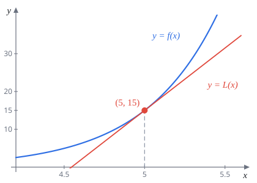
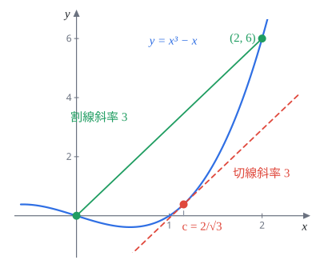
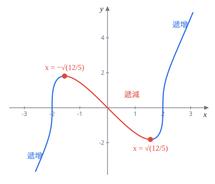
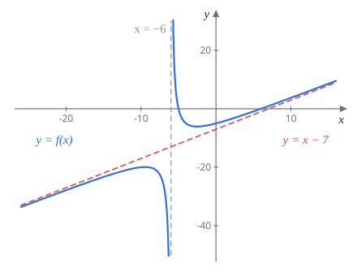
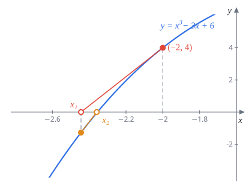

Week 6 微分 III（Differentiation III）
AP Calculus I（115 學年）Lecture Note 6 教學與題解
講義筆誤讀講義時請自己改正以下幾處：
- p.41 題 9 (b)：只問「使極限 $L$ 存在的 $c$」不夠精確，$c\gt-\frac92$ 時極限是 $0$，也算存在。題意應是 $L$ 為非零有限值，此時 $c=-\frac92$、$L=1$。
- p.42 定理 6.3.1 的證明：$x_1,x_2$ 取在 $(a,b)$，結論卻寫 $[a,b]$。應直接取 $x_1,x_2\in[a,b]$，均值定理只需要 $f$ 在 $[x_1,x_2]$ 連續、在 $(x_1,x_2)$ 可微，這兩點都成立。
- p.42 Putnam 2010 A2：「for all $x\in\mathbb R$ and $x\in\mathbb N$」第二個應為 $n\in\mathbb N$。
- p.44 漸近線例題：垂直漸近線應為 $x=-6$（分母 $x+6=0$），極限應寫 $x\to-6^-$、$x\to-6^+$。
- p.44 同題 H.A.：第二個極限應為 $\displaystyle\lim_{x\to-\infty}f(x)=-\infty$。
- p.47：Fermat 定理是在 Week 7 證明（講義寫 Week 6）。
6.1 線性近似
把一條光滑曲線放大到很近的地方看，它會越來越像一條直線，那條直線就是切線。所以在 $x=a$ 附近，可以拿切線來代替函數算近似值。
定義 6.1.1$f$ 在 $x=a$ 可微，$f$ 在 $x=a$ 的線性化（linearization）是
$$L(x)=f'(a)(x-a)+f(a)$$這其實就是切線方程式，只是換了名字。用法：$x$ 靠近 $a$ 時，$f(x)\approx L(x)$。等價的寫法是
$$f(a+\Delta x)\approx f(a)+f'(a)\,\Delta x$$也就是「起點的值，加上斜率乘移動量」。
解題套路要估 $f(\text{某個醜數})$：
- 找一個靠近它、而且 $f$ 和 $f'$ 都好算的 $a$。
- 算 $f(a)$、$f'(a)$，寫出 $L(x)$。
- 代入醜數。

題 1(a) 寫出 $f(x)=3xe^{2x-10}$ 在 $x=5$ 的線性化。(b) 用 (a) 估計 $f(5.01)$。
(a) $f(5)=15\,e^0=15$。積法則加連鎖律：
$$f'(x)=3e^{2x-10}+3x\cdot 2e^{2x-10}=(3+6x)e^{2x-10}$$$f'(5)=33$。
$L(x)=33(x-5)+15$
(b) $f(5.01)\approx L(5.01)=33\cdot0.01+15$。
$f(5.01)\approx15.33$
驗算：真值 $3\cdot5.01\cdot e^{0.02}\approx15.3336$，誤差不到 $0.004$。
題 2在 $(3,8)$ 附近，$3y^{2/3}+xy=36$ 定義了函數 $y=f(x)$。(a) 求 $(3,8)$ 處的 $\dfrac{dy}{dx}$，即 $f'(3)$；(b) 用線性近似估計 $f(3.07)$。
檢查：$3\cdot8^{2/3}+3\cdot8=12+24=36$。
(a) 隱函數微分（上週的方法）：
$$2y^{-1/3}y'+y+xy'=0$$代 $x=3$、$y=8$（$8^{-1/3}=\frac12$）：$y'+8+3y'=0$，$y'=-2$。
$f'(3)=-2$（與講義答案相同）
(b) $f(3.07)\approx f(3)+f'(3)\cdot0.07=8-0.14$。
$f(3.07)\approx7.86$（與講義答案相同）
6.2 均值定理
這節的兩個定理都是「保證某個點存在」型的定理：不告訴你點在哪，只保證有。
定理 6.2.1（Rolle）$f$ 在 $[a,b]$ 連續、在 $(a,b)$ 可微，而且 $f(a)=f(b)$。則存在 $c$，$a\lt c\lt b$，使 $f'(c)=0$。
直覺：從某高度出發，最後回到同一高度，中間一定有一個轉折的地方（最高點或最低點），那裡切線是水平的。證明放在本頁後面的題 27。
證明恰有一根的套路
- 至少一根：找 $f(p)\lt0\lt f(q)$，用勘根定理（中間值定理）。
- 至多一根：假設有兩根 $r_1\lt r_2$，則 $f(r_1)=f(r_2)=0$，Rolle 給出 $f'(c)=0$。只要證明 $f'$ 不會是 $0$，就矛盾。
題 3證明 $4x^5+x^3+7x-2=0$ 恰有一個實根。
令 $f(x)=4x^5+x^3+7x-2$，多項式處處連續、可微。
至少一根：$f(0)=-2\lt0$，$f(1)=10\gt0$，由勘根定理，$(0,1)$ 內有根。
至多一根：若有兩根 $r_1\lt r_2$，則 $f(r_1)=f(r_2)=0$，由 Rolle 存在 $c\in(r_1,r_2)$ 使 $f'(c)=0$。但
$$f'(x)=20x^4+3x^2+7\ge7\gt0$$永遠不是 $0$，矛盾。所以恰有一個實根。
題 4證明 $x=\cos x$ 在 $[0,1]$ 上恰有一解。提示：令 $f(x)=x-\cos x$。
解 $x=\cos x$ 等於找 $f(x)=0$ 的根。
至少一根：$f(0)=-1\lt0$，$f(1)=1-\cos1\gt0$（$\cos1\lt1$）。勘根定理給出 $(0,1)$ 內一根。
至多一根：$f'(x)=1+\sin x$。在 $[0,1]$ 上 $\sin x\ge0$，所以 $f'(x)\ge1\gt0$。若有兩根，Rolle 給出 $f'(c)=0$，矛盾。
題 5證明 $y=x$ 與 $y=\tan^{-1}x$ 恰有一個交點。提示：令 $f(x)=x-\tan^{-1}x$。
交點就是 $f(x)=0$ 的根。$f(0)=0$，所以 $x=0$ 是一根。
$$f'(x)=1-\frac{1}{1+x^2}=\frac{x^2}{1+x^2}$$
這次 $f'(0)=0$，不能直接說「$f'$ 永不為 $0$」，要多想一步。假設還有另一根 $b\neq0$：
- $b\gt0$：在 $[0,b]$ 用 Rolle，得 $c\in(0,b)$ 使 $f'(c)=0$。但 $c\neq0$ 時 $f'(c)=\frac{c^2}{1+c^2}\gt0$，矛盾。
- $b\lt0$：在 $[b,0]$ 用 Rolle，同理矛盾。
所以只有 $x=0$ 一根，交點只有 $(0,0)$。
題 6$f(x)=|x|$，$x\in[-1,1]$。說明 $f(-1)=f(1)=1$，但不存在 $c$ 使 $f'(c)=0$，並解釋為什麼 Rolle 定理不適用。提示：證明 $f'(0)$ 不存在。
$f(-1)=|-1|=1=f(1)$。導數：
$$f'(x)=\begin{cases}-1,&-1\lt x\lt0\\ 1,&0\lt x\lt1\end{cases}$$在 $x=0$：
$$\lim_{h\to0^+}\frac{|h|-0}{h}=1,\qquad\lim_{h\to0^-}\frac{|h|-0}{h}=-1$$左右極限不同，$f'(0)$ 不存在。所以 $f'$ 只取 $\pm1$，從來不是 $0$。
Rolle 要求 $f$ 在整個 $(-1,1)$ 可微，$|x|$ 在 $0$ 有尖角，條件不成立，定理的結論就不保證。這題說明條件不能隨便拿掉。
Rolle 定理是下面這個定理在 $f(a)=f(b)$ 時的特例。
定理 6.2.2（均值定理，M.V.T.）$f$ 在 $[a,b]$ 連續、在 $(a,b)$ 可微，則存在 $c$，$a\lt c\lt b$，使
$$\frac{f(b)-f(a)}{b-a}=f'(c)$$左邊是兩端點連線（割線）的斜率，右邊是某點的切線斜率。意思是：中間一定有一點的切線跟割線平行。換成開車的說法，一小時開了 $90$ 公里，那途中某一瞬間時速表一定剛好指在 $90$。

均值定理的兩種用途
- 求 $c$：解 $f'(c)=\dfrac{f(b)-f(a)}{b-a}$，只留下在 $(a,b)$ 裡的解。
- 證不等式：把 $f(b)-f(a)$ 寫成 $f'(c)(b-a)$，再用 $c$ 在 $a$、$b$ 之間去夾 $f'(c)$ 的大小。
題 7(a) 用均值定理證明：對所有實數 $x,y$，$0\le|\cos x-\cos y|\le|x-y|$。
(b) 用 (a) 求 $\displaystyle\lim_{x\to+\infty}\left(\cos\sqrt{x+1}-\cos\sqrt x\right)$。
(a) 左邊 $0\le$ 是絕對值本來就成立。$x=y$ 時兩邊都是 $0$。$x\neq y$ 時，$\cos$ 處處連續可微，在 $x$、$y$ 之間用均值定理：存在 $c$ 介於兩者之間，
$$\cos x-\cos y=-\sin c\,(x-y)$$取絕對值，因為 $|\sin c|\le1$：
$$|\cos x-\cos y|=|\sin c|\,|x-y|\le|x-y|$$(b) 用 (a)，取 $\sqrt{x+1}$ 和 $\sqrt x$：
$$0\le\left|\cos\sqrt{x+1}-\cos\sqrt x\right|\le\sqrt{x+1}-\sqrt x=\frac{1}{\sqrt{x+1}+\sqrt x}$$（最後一步分子有理化。）右邊 $x\to+\infty$ 時趨近 $0$，夾擠定理得絕對值趨近 $0$，所以原式也趨近 $0$。
$0$
注意：$\cos\sqrt x$ 自己在 $x\to\infty$ 時一直振盪、沒有極限，不能拆成兩個極限相減。
題 8$f(x)=x^3-x$，$a=0$，$b=2$。求在 $[0,2]$ 上滿足均值定理的 $c$。
割線斜率：$\dfrac{f(2)-f(0)}{2-0}=\dfrac{6-0}{2}=3$。
解 $f'(c)=3c^2-1=3$：$c^2=\dfrac43$，$c=\pm\dfrac{2}{\sqrt3}$。只有正的在 $(0,2)$ 裡（$\frac{2}{\sqrt3}\approx1.155$）。
$c=\dfrac{2}{\sqrt3}=\dfrac{2\sqrt3}{3}$
題 9(a) 用均值定理證明：對任意 $0\lt a\lt b$， $$\frac{\sqrt b-\sqrt a}{1+b}\lt\tan^{-1}\sqrt b-\tan^{-1}\sqrt a\lt\frac{\sqrt b-\sqrt a}{1+a}$$ (b) 求 $c$，使 $\displaystyle\lim_{x\to+\infty}\frac{\tan^{-1}\sqrt{x^3+1}-\tan^{-1}\sqrt{x^3-1}}{x^c}=L$ 存在。（題意應要求 $L$ 非零，見頁首。）
(a) $f(t)=\tan^{-1}t$，$f'(t)=\dfrac{1}{1+t^2}$。在 $[\sqrt a,\sqrt b]$ 用均值定理：
$$\tan^{-1}\sqrt b-\tan^{-1}\sqrt a=\frac{1}{1+c^2}\left(\sqrt b-\sqrt a\right),\qquad\sqrt a\lt c\lt\sqrt b$$把 $c$ 的範圍轉成 $\frac{1}{1+c^2}$ 的範圍：
$$\begin{aligned} &\sqrt a\lt c\lt\sqrt b \\ &\iff a\lt c^2\lt b \\ &\iff 1+a\lt1+c^2\lt1+b \\ &\iff \frac{1}{1+b}\lt\frac{1}{1+c^2}\lt\frac{1}{1+a} \end{aligned}$$三邊乘上正數 $\sqrt b-\sqrt a$ 就得證。
(b) 用 (a)，取 $a=x^3-1$、$b=x^3+1$（$x\gt1$ 時 $0\lt a\lt b$）。先算
$$\sqrt b-\sqrt a=\frac{b-a}{\sqrt b+\sqrt a}=\frac{2}{\sqrt{x^3+1}+\sqrt{x^3-1}}$$所以分子被夾在
$$\frac{2}{\left(\sqrt{x^3+1}+\sqrt{x^3-1}\right)(x^3+2)}\;\text{與}\;\frac{2}{\left(\sqrt{x^3+1}+\sqrt{x^3-1}\right)x^3}$$之間。$x$ 很大時兩者都約等於 $\dfrac{2}{2x^{3/2}\cdot x^3}=x^{-9/2}$。乘上 $x^{9/2}$ 後，兩邊的極限都是 $1$：例如下界
$$\begin{aligned} \frac{2x^{9/2}}{\left(\sqrt{x^3+1}+\sqrt{x^3-1}\right)(x^3+2)} &= \frac{2}{\left(\sqrt{1+x^{-3}}+\sqrt{1-x^{-3}}\right)\left(1+2x^{-3}\right)} \\ &\to \frac22= 1 \end{aligned}$$夾擠得分子 $\times x^{9/2}\to1$。所以取 $c=-\frac92$ 時 $L=1$；$c$ 比 $-\frac92$ 大，極限變成 $0$；比 $-\frac92$ 小則發散。
$c=-\dfrac92$，$L=1$（$c$ 與講義答案相同）
題 10令 $f(x)=\ln x$。證明對所有 $a,b\gt0$、$a\neq b$， $$1-\frac ab\lt\ln b-\ln a\lt\frac ba-1$$
先把左右兩邊改寫：$1-\dfrac ab=\dfrac{b-a}{b}$，$\dfrac ba-1=\dfrac{b-a}{a}$。在 $a$、$b$ 之間用均值定理，$(\ln x)'=\frac1x$：
$$\ln b-\ln a=\frac{b-a}{c},\qquad c\text{ 介於 }a,b\text{ 之間}$$$a\lt b$：$a\lt c\lt b$，所以 $\dfrac1b\lt\dfrac1c\lt\dfrac1a$，乘上正數 $b-a$ 得
$$\frac{b-a}{b}\lt\frac{b-a}{c}\lt\frac{b-a}{a}$$$a\gt b$：$b\lt c\lt a$，所以 $\dfrac1a\lt\dfrac1c\lt\dfrac1b$。這次 $b-a\lt0$，乘上去不等號反向：
$$\frac{b-a}{b}\lt\frac{b-a}{c}\lt\frac{b-a}{a}$$兩種情形得到同一串不等式，得證。
題 11$f(x)=\dfrac1x$。求在 $[1,3]$ 上滿足均值定理的所有 $c$。
$f$ 在 $[1,3]$ 連續可微（不含 $0$）。割線斜率 $\dfrac{\frac13-1}{3-1}=-\dfrac13$。
解 $f'(c)=-\dfrac{1}{c^2}=-\dfrac13$：$c^2=3$，取在 $(1,3)$ 內的 $c=\sqrt3$。
$c=\sqrt3$（與講義答案相同）
6.3 均值定理的推論
6.3.1 推論一：導數為零就是常數
$f'(x)$ 是切線斜率。如果每個地方的斜率都是 $0$，函數完全沒有上下起伏，感覺上就是常數。均值定理把這個感覺變成證明。
定理 6.3.1$f$ 在 $(a,b)$ 可微、在 $[a,b]$ 連續。若在 $(a,b)$ 上 $f'(x)=0$，則 $f$ 在 $[a,b]$ 上是常數。
題 12證明定理 6.3.1。（講義證明有小筆誤，見頁首。）
任取 $[a,b]$ 中兩點 $x_1\lt x_2$。$f$ 在 $[x_1,x_2]$ 連續、在 $(x_1,x_2)$ 可微，用均值定理：存在 $c\in(x_1,x_2)$，
$$f(x_2)-f(x_1)=f'(c)(x_2-x_1)=0\cdot(x_2-x_1)=0$$任兩點的函數值都相等，所以 $f$ 是常數。
證明恆等式的套路要證 $F(x)=\text{常數}$：
- 微分，算出 $F'(x)=0$。
- 由定理 6.3.1，$F$ 是常數。
- 代一個好算的點，求出那個常數。
端點處 $F$ 可能不可微（例如分母出現 $\sqrt x$），只要在端點連續，定理 6.3.1 仍然能用。
題 13證明對所有 $x\ge0$，$2\tan^{-1}\sqrt x-\sin^{-1}\!\left(\dfrac{x-1}{x+1}\right)=\dfrac\pi2$。
令 $F(x)$ 為左式。$x\gt0$ 時逐項微分。第一項：
$$\frac{d}{dx}2\tan^{-1}\sqrt x=2\cdot\frac{1}{1+x}\cdot\frac{1}{2\sqrt x}=\frac{1}{(1+x)\sqrt x}$$第二項，令 $u=\dfrac{x-1}{x+1}$，商法則得 $u'=\dfrac{(x+1)-(x-1)}{(x+1)^2}=\dfrac{2}{(x+1)^2}$。另外
$$\begin{aligned} 1-u^2 &= \frac{(x+1)^2-(x-1)^2}{(x+1)^2} \\ &= \frac{4x}{(x+1)^2} \\ &\Longrightarrow \sqrt{1-u^2}=\frac{2\sqrt x}{x+1} \end{aligned}$$所以
$$\frac{d}{dx}\sin^{-1}u=\frac{u'}{\sqrt{1-u^2}}=\frac{2}{(x+1)^2}\cdot\frac{x+1}{2\sqrt x}=\frac{1}{(x+1)\sqrt x}$$兩項相同，$F'(x)=0$。$F$ 在 $[0,\infty)$ 連續，對任意 $b\gt0$ 在 $[0,b]$ 用定理 6.3.1，$F$ 是常數。代 $x=0$：
$$F(0)=2\tan^{-1}0-\sin^{-1}(-1)=0-\left(-\frac\pi2\right)=\frac\pi2$$題 14證明對所有實數 $x$，$\tan^{-1}(e^x)+\tan^{-1}(e^{-x})=\dfrac\pi2$。
令 $F(x)$ 為左式。
$$F'(x)=\frac{e^x}{1+e^{2x}}+\frac{-e^{-x}}{1+e^{-2x}}$$第二項上下同乘 $e^{2x}$：$\dfrac{-e^{-x}\cdot e^{2x}}{e^{2x}+1}=\dfrac{-e^{x}}{1+e^{2x}}$，剛好和第一項抵消，$F'(x)=0$，$F$ 是常數。
代 $x=0$：$F(0)=\tan^{-1}1+\tan^{-1}1=\dfrac\pi4+\dfrac\pi4=\dfrac\pi2$。
（直覺：$e^x$ 與 $e^{-x}$ 互為倒數，而 $\tan^{-1}t+\tan^{-1}\frac1t=\frac\pi2$ 對 $t\gt0$ 成立，就是直角三角形的兩個銳角互餘。）
題 15證明恆等式 $2\sin^{-1}x=\cos^{-1}(1-2x^2)$，$x\ge0$。
$\sin^{-1}x$ 要 $x\le1$，所以範圍其實是 $0\le x\le1$。令 $F(x)=2\sin^{-1}x-\cos^{-1}(1-2x^2)$，在 $0\lt x\lt1$ 微分：
$$\begin{aligned} \frac{d}{dx}\cos^{-1}(1-2x^2) &= -\frac{1}{\sqrt{1-(1-2x^2)^2}}\cdot(-4x) \\ &= \frac{4x}{\sqrt{4x^2-4x^4}} \\ &= \frac{4x}{2x\sqrt{1-x^2}} \\ &= \frac{2}{\sqrt{1-x^2}} \end{aligned}$$倒數第二步用 $\sqrt{4x^2}=2x$，這裡用到了 $x\gt0$。$2\sin^{-1}x$ 的導數也是 $\dfrac{2}{\sqrt{1-x^2}}$，所以 $F'=0$。$F$ 在 $[0,1]$ 連續，由定理 6.3.1 是常數，$F(0)=0-\cos^{-1}1=0$。
（$x\lt0$ 時 $\sqrt{4x^2}=-2x$，導數差一個負號，等式不成立：左邊是負的，右邊 $\cos^{-1}$ 永遠 $\ge0$。這就是題目限制 $x\ge0$ 的原因。）
題 16$f$、$g$ 可微，滿足 $f'(x)=g(x)$、$g'(x)=-f(x)$、$f(0)=0$、$g(0)=1$。證明 $f(x)=\sin x$、$g(x)=\cos x$。提示：考慮 $h(x)=\bigl(f(x)-\sin x\bigr)^2+\bigl(g(x)-\cos x\bigr)^2$。
微分 $h$，連鎖律：
$$h'(x)=2\bigl(f-\sin x\bigr)\bigl(f'-\cos x\bigr)+2\bigl(g-\cos x\bigr)\bigl(g'+\sin x\bigr)$$代 $f'=g$、$g'=-f$：
$$h'(x)=2\bigl(f-\sin x\bigr)\bigl(g-\cos x\bigr)+2\bigl(g-\cos x\bigr)\bigl(-f+\sin x\bigr)=0$$所以 $h$ 是常數，$h(x)=h(0)=(0-0)^2+(1-1)^2=0$。
兩個平方和為 $0$，每個平方都必須是 $0$：$f(x)=\sin x$、$g(x)=\cos x$ 對所有 $x$ 成立。
（這題說的是：滿足「導數互相輪替」與初始值的函數只有一組，所以 $\sin$、$\cos$ 可以用這組條件來定義。）
題 17（Putnam 2010 A2）找出所有可微函數 $f:\mathbb R\to\mathbb R$，使得對所有 $x\in\mathbb R$、$n\in\mathbb N$， $$f'(x)=\frac{f(x+n)-f(x)}{n}$$ 提示：$g(x)=f(x+1)-f(x)$。（講義把 $n\in\mathbb N$ 誤植為 $x\in\mathbb N$。）
$n=1$：$f'(x)=f(x+1)-f(x)=g(x)$。右邊是可微函數的差，所以 $f'$ 本身也可微。
$n=2$：$f(x+2)-f(x)=2f'(x)$。另一方面把左邊拆成兩段，各用一次 $n=1$：
$$\begin{aligned} f(x+2)-f(x) &= \bigl[f(x+2)-f(x+1)\bigr]+\bigl[f(x+1)-f(x)\bigr] \\ &= f'(x+1)+f'(x) \end{aligned}$$比較兩式得 $f'(x+1)=f'(x)$。
現在對 $f'(x)=f(x+1)-f(x)$ 兩邊微分：
$$f''(x)=f'(x+1)-f'(x)=0$$由定理 6.3.1，$f'$ 是常數 $c$；再用一次，$f(x)-cx$ 的導數為 $0$，也是常數 $d$。所以 $f(x)=cx+d$。
反過來檢查：$\dfrac{c(x+n)+d-(cx+d)}{n}=c=f'(x)$，確實成立。
$f(x)=cx+d$，$c,d$ 為任意實數（與講義答案相同）
6.3.2 推論二：用一階導數判斷增減
斜率為正，往右走就往上爬；斜率為負就往下。直覺很明顯，嚴格證明一樣靠均值定理。
定理 6.3.2$f$ 在 $(a,b)$ 可微、在 $[a,b]$ 連續。
- 在 $(a,b)$ 上 $f'(x)\ge0$，則 $f$ 在 $[a,b]$ 遞增。
- 在 $(a,b)$ 上 $f'(x)\le0$，則 $f$ 在 $[a,b]$ 遞減。
- 在 $(a,b)$ 上 $f'(x)\gt0$，則 $f$ 在 $[a,b]$ 嚴格遞增。
- 在 $(a,b)$ 上 $f'(x)\lt0$，則 $f$ 在 $[a,b]$ 嚴格遞減。
「遞增」是 $x_1\lt x_2\Rightarrow f(x_1)\le f(x_2)$（允許持平），「嚴格遞增」是 $f(x_1)\lt f(x_2)$。
題 18證明定理 6.3.2（講義證了 (1)，其餘留作練習）。
四條用同一招。任取 $[a,b]$ 中 $x_1\lt x_2$，在 $[x_1,x_2]$ 用均值定理：存在 $e\in(x_1,x_2)$，
$$f(x_2)-f(x_1)=f'(e)\,(x_2-x_1)$$其中 $x_2-x_1\gt0$，所以 $f(x_2)-f(x_1)$ 的正負號跟 $f'(e)$ 一樣：
- $f'(e)\ge0$ 推出 $f(x_2)\ge f(x_1)$，遞增。
- $f'(e)\le0$ 推出 $f(x_2)\le f(x_1)$，遞減。
- $f'(e)\gt0$ 推出 $f(x_2)\gt f(x_1)$，嚴格遞增。
- $f'(e)\lt0$ 推出 $f(x_2)\lt f(x_1)$，嚴格遞減。
求增減區間的套路
- 算 $f'(x)$，盡量因式分解。
- 找出 $f'=0$ 與 $f'$ 不存在的點，把數線切成幾段。
- 每段挑一點看 $f'$ 的正負（或看各因式的正負）。
- 正的那段遞增、負的那段遞減。$f'$ 只在零星幾個點等於 $0$ 時，不影響嚴格遞增或遞減。
題 19$f(x)=x^2$，判斷增減。
$f'(x)=2x$：$x\gt0$ 時 $f'\gt0$，$x\lt0$ 時 $f'\lt0$。
在 $(0,+\infty)$ 嚴格遞增，在 $(-\infty,0)$ 嚴格遞減
（$f$ 在 $0$ 連續，所以端點 $0$ 包進去寫成 $[0,+\infty)$、$(-\infty,0]$ 也對。）

題 20$f(x)=x\sqrt[3]{x^2-4}$，求嚴格遞增與嚴格遞減的區間。
寫成 $f(x)=x(x^2-4)^{1/3}$，積法則：
$$f'(x)=(x^2-4)^{1/3}+x\cdot\frac13(x^2-4)^{-2/3}\cdot2x$$提出 $(x^2-4)^{-2/3}$ 通分：
$$f'(x)=(x^2-4)^{-2/3}\left[(x^2-4)+\frac{2x^2}{3}\right]=\frac{5x^2-12}{3(x^2-4)^{2/3}}$$分母是某數的立方根再平方，$x\neq\pm2$ 時一定是正的，所以 $f'$ 的正負只看分子 $5x^2-12$。
- $f'=0$：$x=\pm\sqrt{\frac{12}{5}}=\pm\frac{2\sqrt{15}}{5}\approx\pm1.549$。
- $f'$ 不存在：$x=\pm2$，但這兩點左右 $f'$ 同號，$f$ 又連續，不會改變增減。
$|x|\gt\sqrt{12/5}$ 時 $5x^2-12\gt0$，$|x|\lt\sqrt{12/5}$ 時 $\lt0$。
嚴格遞增：$\left(-\infty,-\sqrt{\tfrac{12}{5}}\right]$ 與 $\left[\sqrt{\tfrac{12}{5}},+\infty\right)$；嚴格遞減：$\left[-\sqrt{\tfrac{12}{5}},\sqrt{\tfrac{12}{5}}\right]$
題 21$f(x)=-x^5+\frac52x^4+\frac{40}{3}x^3$，求遞增與遞減區間。
$$\begin{aligned} f'(x) &= -5x^4+10x^3+40x^2 \\ &= -5x^2(x^2-2x-8) \\ &= -5x^2(x-4)(x+2) \end{aligned}$$
$-5x^2\le0$，只在 $x=0$ 等於 $0$。所以 $f'$ 的正負和 $(x-4)(x+2)$ 相反：
- $-2\lt x\lt4$：$(x-4)(x+2)\lt0$，$f'\ge0$（只有 $x=0$ 時是 $0$）。
- $x\lt-2$ 或 $x\gt4$：$(x-4)(x+2)\gt0$，$f'\lt0$。
在 $[-2,4]$ 遞增，在 $(-\infty,-2]\cup[4,+\infty)$ 遞減（與講義答案相同）
$x=0$ 雖然 $f'=0$，但兩側 $f'$ 都是正的，$f$ 只是在那裡暫時變平，沒有轉頭，所以 $[-2,4]$ 上其實是嚴格遞增。
6.4 斜漸近線（*）
以前學過兩種漸近線：垂直漸近線（$x$ 靠近某值時 $f\to\pm\infty$）、水平漸近線（$x\to\pm\infty$ 時 $f$ 靠近某常數）。如果 $x\to\pm\infty$ 時 $f$ 會跑到無窮大，但越來越貼著一條斜線走，那條斜線叫斜漸近線。
定義 6.4.1直線 $y=ax+b$ 是曲線 $y=f(x)$ 的斜漸近線，若
$$\lim_{x\to\infty}\bigl[f(x)-(ax+b)\bigr]=0\quad\text{或}\quad\lim_{x\to-\infty}\bigl[f(x)-(ax+b)\bigr]=0$$定理 6.4.1若 $y=Ax+B$ 是 $y=f(x)$ 在 $x\to\infty$ 的斜漸近線，則
$$A=\lim_{x\to\infty}\frac{f(x)}{x}\neq0,\qquad B=\lim_{x\to\infty}\bigl[f(x)-Ax\bigr]$$$x\to-\infty$ 的版本把極限改成 $x\to-\infty$。
為什麼：$f(x)\approx Ax+B$，除以 $x$ 後 $\frac{B}{x}\to0$，剩下斜率 $A$；斜率知道了，$f(x)-Ax$ 剩下的就是截距 $B$。
有理函數的捷徑分子次數比分母剛好多 $1$ 時，直接做多項式長除法：$f(x)=\text{商}+\dfrac{\text{餘式}}{\text{分母}}$，後面那項 $\to0$，所以商就是斜漸近線，而且 $x\to\pm\infty$ 兩邊是同一條。

題 22求 $f(x)=\dfrac{x^2-x-30}{x+6}$ 的所有漸近線（垂直、水平、斜）。（講義詳解有兩處筆誤，見頁首。）
垂直：分母 $x+6=0$ 在 $x=-6$，此時分子 $36+6-30=12\neq0$，所以會爆掉。分子 $\to12\gt0$：
$$\begin{aligned} \lim_{x\to-6^-}f(x) &= -\infty\;(\text{分母}\to0^-) \\[4pt] \lim_{x\to-6^+}f(x) &= +\infty\;(\text{分母}\to0^+) \end{aligned}$$垂直漸近線 $x=-6$。
水平：分子次數較高，$\displaystyle\lim_{x\to\infty}f(x)=\infty$、$\displaystyle\lim_{x\to-\infty}f(x)=-\infty$，沒有水平漸近線。
斜：用定理 6.4.1，
$$\begin{aligned} A &= \lim_{x\to\infty}\frac{x^2-x-30}{x^2+6x}= 1 \\[4pt] B &= \lim_{x\to\infty}\left[\frac{x^2-x-30}{x+6}-x\right] \\ &= \lim_{x\to\infty}\frac{-7x-30}{x+6}= -7 \end{aligned}$$$x\to-\infty$ 時算出一樣的 $A$、$B$。用長除法驗算：$\dfrac{x^2-x-30}{x+6}=x-7+\dfrac{12}{x+6}$。
垂直漸近線 $x=-6$；無水平漸近線；斜漸近線 $y=x-7$
題 23求 $f(x)=\dfrac{3x^2-2x+1}{x-1}$ 的所有漸近線。
長除法：$3x^2-2x+1=(x-1)(3x+1)+2$，所以
$$f(x)=3x+1+\frac{2}{x-1}$$垂直：$x=1$ 時分子 $=2\neq0$，$x\to1^\pm$ 時 $f\to\pm\infty$，垂直漸近線 $x=1$。
水平：$x\to\pm\infty$ 時 $f\to\pm\infty$，沒有。
斜：$\dfrac{2}{x-1}\to0$，所以 $f(x)-(3x+1)\to0$，斜漸近線 $y=3x+1$（兩邊都是）。
V.A. $x=1$；H.A. 無；S.A. $y=3x+1$（與講義答案相同）
工具：羅必達法則（L'Hôpital）
講義特別註明：羅必達法則不考，而且考試不能用。這裡只是讓你知道有這個工具，可以拿來檢查答案。
定理 6.4.2（羅必達法則）$f,g$ 可微，且 (1) $\displaystyle\lim_{x\to a}f(x)=\lim_{x\to a}g(x)=0$（或都是 $\pm\infty$）；(2) $a$ 附近 $g'(x)\neq0$；(3) $\displaystyle\lim_{x\to a}\frac{f'(x)}{g'(x)}=A$。則
$$\lim_{x\to a}\frac{f(x)}{g(x)}=\lim_{x\to a}\frac{f'(x)}{g'(x)}=A$$$a$ 與 $A$ 可以是 $\pm\infty$，單邊極限 $x\to a^\pm$ 也成立。常在等號上寫 $\overset{L}{=}$ 表示用了這條法則。
注意是分子分母各自微分，不是對整個分式用商法則。條件 (1) 一定要先檢查，不是 $\frac00$ 或 $\frac\infty\infty$ 型就不能用。
題 24$f(x)=\dfrac{x^2-x-30}{x+6}$，用羅必達法則求 $\displaystyle\lim_{x\to+\infty}\frac{f(x)}{x}$ 與 $\displaystyle\lim_{x\to-\infty}\frac{f(x)}{x}$。
$\dfrac{f(x)}{x}=\dfrac{x^2-x-30}{x^2+6x}$，$x\to+\infty$ 時分子分母都 $\to+\infty$，可以用：
$$\lim_{x\to+\infty}\frac{x^2-x-30}{x^2+6x}\overset{L}{=}\lim_{x\to+\infty}\frac{2x-1}{2x+6}\overset{L}{=}\lim_{x\to+\infty}\frac22=1$$第二次用之前也要確認 $2x-1$、$2x+6$ 都 $\to\infty$。$x\to-\infty$ 時分子分母都 $\to+\infty$，下一步都 $\to-\infty$，一樣得 $1$。
兩個極限都是 $1$
不用羅必達：分子分母同除 $x^2$，$\dfrac{1-\frac1x-\frac{30}{x^2}}{1+\frac6x}\to1$，更快。
題 25(a) 用羅必達法則求 $\displaystyle\lim_{x\to0^+}x\ln x$。提示：$x\ln x=\dfrac{\ln x}{1/x}$。
(b) $y=x^x=e^{x\ln x}$，求 $\displaystyle\lim_{x\to0^+}x^x$。
(a) $x\ln x$ 是 $0\cdot(-\infty)$ 型，不能直接用。改寫成 $\dfrac{\ln x}{1/x}$，變成 $\dfrac{-\infty}{+\infty}$ 型：
$$\lim_{x\to0^+}\frac{\ln x}{1/x}\overset{L}{=}\lim_{x\to0^+}\frac{1/x}{-1/x^2}=\lim_{x\to0^+}(-x)=0$$$0$
(b) $e^t$ 連續，極限可以搬進指數：
$$\lim_{x\to0^+}x^x=e^{\lim_{x\to0^+}x\ln x}=e^0$$$1$
直覺：$x\to0^+$ 時 $\ln x$ 往 $-\infty$ 跑得很慢，被前面的 $x$ 壓回 $0$。
6.5 $e^x$ 與 $\ln x$ 的極限形式（*）
17 世紀歐洲數學家研究複利時發現 $\left(1+\frac1n\right)^n$ 在 $n\to\infty$ 時會趨近某個常數，到 18 世紀歐拉把它定義成 $e$，並且對任意實數 $x$ 有
$$e^x=\lim_{n\to\infty}\left(1+\frac xn\right)^n\tag{6.5.1}$$（上週的推廣公式 $a=x$、$b=1$ 就是這條。）$\ln x$ 是 $e^x$ 的反函數，那 $\ln x$ 是否也有類似的極限式？做法是：令 $f_n(x)=\left(1+\frac xn\right)^n$，每個 $n$ 都是一個函數，先求每個 $f_n$ 的反函數，再讓 $n\to\infty$。
題 26$x\gt0$，固定 $n\in\mathbb N$，$f_n(x)=\left(1+\frac xn\right)^n$。(a) 證明 $f_n'(x)\gt0$，因此 $f_n$ 在 $(0,+\infty)$ 一對一；(b) 求 $g_n=f_n^{-1}$。
(a) 連鎖律：
$$f_n'(x)=n\left(1+\frac xn\right)^{n-1}\cdot\frac1n=\left(1+\frac xn\right)^{n-1}\gt0$$（$x\gt0$ 時底數大於 $1$。）由定理 6.3.2，$f_n$ 嚴格遞增，所以一對一，反函數存在。
(b) $y=\left(1+\frac xn\right)^n$，$x$、$y$ 對調後解 $y$：
$$x=\left(1+\frac yn\right)^n\iff x^{1/n}=1+\frac yn\iff y=n\left(x^{1/n}-1\right)$$（開 $n$ 次方時取正根，因為 $1+\frac yn\gt0$。）
$g_n(x)=n\left(x^{1/n}-1\right)$
$f_n\to e^x$，它們的反函數 $g_n$ 就趨近 $e^x$ 的反函數 $\ln x$，所以
$$\ln x=\lim_{n\to\infty}n\left(x^{1/n}-1\right)$$「反函數的極限等於極限的反函數」需要另外證明，講義沒有要求。可以用 Week 4 的導數定義驗證：令 $h=\frac1n$，
$$n\left(x^{1/n}-1\right)=\frac{x^h-x^0}{h}\;\xrightarrow{h\to0}\;\left.\frac{d}{dt}x^t\right|_{t=0}=x^0\ln x=\ln x$$兩邊對得上。
Rolle 定理與均值定理的證明（*）
證 Rolle 需要兩個工具：
定理 6.5.1（極值定理 Ver.1）$f$ 在閉區間 $[a,b]$ 連續，則 $f$ 在 $[a,b]$ 上一定取得最大值與最小值。
定理 6.5.2（Fermat）$f$ 可微，若 $f$ 在 $x=c$ 有局部極大或極小，則 $f'(c)=0$。（Week 7 證明。）
題 27證明 Rolle 定理：$f$ 在 $[a,b]$ 連續、在 $(a,b)$ 可微、$f(a)=f(b)$，則存在 $c\in(a,b)$ 使 $f'(c)=0$。
分三種情形。
情形 1：$f$ 是常數。$f'\equiv0$，$(a,b)$ 裡任何一點都可以當 $c$。
情形 2：某個 $x\in(a,b)$ 有 $f(x)\gt f(a)$。由極值定理，$f$ 在 $[a,b]$ 有最大值。最大值至少是 $f(x)$，比兩端的 $f(a)=f(b)$ 大，所以最大值不在端點，而在某個 $c\in(a,b)$。$c$ 是內部的最大值，當然也是局部極大，由 Fermat 定理 $f'(c)=0$。
情形 3：某個 $x\in(a,b)$ 有 $f(x)\lt f(a)$。同理，改用最小值。
不是常數的話一定落在情形 2 或 3，所以三種情形涵蓋全部。
題 28用 Rolle 定理證明均值定理。
想法：把均值定理的圖「轉正」。拿 $f$ 減掉割線，兩端就都變成 $0$，可以套 Rolle。
$A=(a,f(a))$、$B=(b,f(b))$，割線 $AB$ 的斜率 $m=\dfrac{f(b)-f(a)}{b-a}$，方程式 $y=f(a)+m(x-a)$。定義
$$h(x)=f(x)-f(a)-m(x-a)$$檢查 Rolle 的條件：
- $h$ 是 $f$ 減一次式，在 $[a,b]$ 連續、在 $(a,b)$ 可微。
- $h(a)=f(a)-f(a)-0=0$；$h(b)=f(b)-f(a)-m(b-a)=f(b)-f(a)-\bigl(f(b)-f(a)\bigr)=0$。
由 Rolle，存在 $c\in(a,b)$ 使 $h'(c)=0$。而 $h'(x)=f'(x)-m$，所以
$$f'(c)=m=\frac{f(b)-f(a)}{b-a}$$6.6 牛頓法（*）
想解 $f(x)=0$ 但解不出公式時，可以用切線一步一步逼近。從猜測值 $x_k$ 出發，在 $(x_k,f(x_k))$ 畫切線，切線和 $x$ 軸的交點當作下一個猜測值 $x_{k+1}$。切線就是 6.1 的線性化，令 $L(x)=f'(x_k)(x-x_k)+f(x_k)=0$ 解出
$$x_{k+1}=x_k-\frac{f(x_k)}{f'(x_k)}$$如果數列 $\{x_k\}$ 收斂到 $y$，則 $f(y)=0$。
牛頓法不是萬靈丹，要注意：
- 它只是找根的方法之一，不能保證根存在（可能根本沒有實根）。
- 某一步 $f'(x_k)=0$：切線水平，跟 $x$ 軸沒有交點，直接失敗。
- $f'(x_k)\approx0$：切線很平，$x_{k+1}$ 被甩到很遠，可能跑出定義域。
- $\{x_k\}$ 發散或來回振盪，也算失敗。
- 初始值 $x_0$ 很重要，最好先用勘根定理找出根所在的區間，再從附近出發。
- 要找 $f$ 的臨界點（$f'=0$ 的點），就對 $f'$ 用牛頓法：$x_{k+1}=x_k-\dfrac{f'(x_k)}{f''(x_k)}$。

題 29用牛頓法近似 $f(x)=x^3-3x+6$ 的根。(a) 取 $x_0=1$；(b) 算 $f(-2)$、$f(-3)$，選適當的 $x_0$ 來近似根。
$f'(x)=3x^2-3$。
(a) $f'(1)=0$，第一步就要除以 $0$，牛頓法失敗。
(b) $f(-2)=-8+6+6=4\gt0$，$f(-3)=-27+9+6=-12\lt0$，由勘根定理，根在 $[-3,-2]$。取 $x_0=-2$：
$$x_1=-2-\frac{f(-2)}{f'(-2)}=-2-\frac49=-\frac{22}{9}\approx-2.4444$$下一步要 $f\left(-\frac{22}9\right)$ 與 $f'\left(-\frac{22}9\right)$：
$$f\left(-\tfrac{22}{9}\right)=-\tfrac{10648}{729}+\tfrac{22}{3}+6=-\tfrac{928}{729},\qquad f'\left(-\tfrac{22}{9}\right)=\tfrac{1452}{81}-3=\tfrac{403}{27}$$ $$x_2=-\frac{22}{9}+\frac{928/729}{403/27}=-\frac{22}{9}+\frac{928}{10881}=-\frac{25670}{10881}\approx-2.3592$$$x_1\approx-2.4444$，$x_2\approx-2.3592$（與講義相同）
再做兩步會得到 $-2.35531$、$-2.35530$，真正的根約 $-2.355301$，收斂得很快。
題 30用牛頓法近似 $x^2=2$ 的解，$x_0=1$，求 $x_1,x_2,x_3$。
令 $f(x)=x^2-2$，$f'(x)=2x$，迭代式化簡成
$$x_{k+1}=x_k-\frac{x_k^2-2}{2x_k}=\frac12\left(x_k+\frac{2}{x_k}\right)$$- $x_1=\frac12(1+2)=1.5$
- $x_2=\frac12\left(1.5+\frac{2}{1.5}\right)=\frac{17}{12}\approx1.416667$
- $x_3=\frac12\left(\frac{17}{12}+\frac{24}{17}\right)=\frac{577}{408}\approx1.414216$
$x_1=1.5$，$x_2\approx1.416667$，$x_3\approx1.414216$（與講義答案相同）
$\sqrt2=1.4142136\ldots$，三步就有六位正確。化簡後的式子就是「猜值和 $2\div$ 猜值取平均」，古巴比倫人就這樣開根號。
題 31(a) 說明為什麼對 $\sqrt[3]{x}=0$ 用牛頓法、$x_0=1$ 會失敗。(b) 說明為什麼對 $x^3-2x-2=0$ 用牛頓法、$x_0=0$ 會失敗。
(a) $f(x)=x^{1/3}$，$f'(x)=\frac13x^{-2/3}$：
$$x_{k+1}=x_k-\frac{x_k^{1/3}}{\frac13x_k^{-2/3}}=x_k-3x_k=-2x_k$$所以 $x_0=1$，$x_1=-2$，$x_2=4$，$x_3=-8,\ldots$ 每次距離加倍、左右跳，發散。根明明就在 $0$，但曲線在 $0$ 附近太陡（切線趨近鉛直），切線每次都把猜測值甩過頭。
(b) $f(x)=x^3-2x-2$，$f'(x)=3x^2-2$。
- $x_0=0$：$f(0)=-2$，$f'(0)=-2$，$x_1=0-\frac{-2}{-2}=-1$。
- $x_1=-1$：$f(-1)=-1$，$f'(-1)=1$，$x_2=-1-\frac{-1}{1}=0$。
回到起點，之後永遠在 $0,-1,0,-1,\ldots$ 打轉，不收斂。（真正的根約 $1.769$，要從它附近例如 $x_0=2$ 出發才找得到。）
本週必背總整理
- 線性近似：$f(x)\approx L(x)=f(a)+f'(a)(x-a)$，就是切線
- Rolle：連續、可微、$f(a)=f(b)$，則某處 $f'(c)=0$；證「恰有一根」＝勘根定理＋Rolle 反證
- 均值定理：$\dfrac{f(b)-f(a)}{b-a}=f'(c)$；用來求 $c$、證不等式（夾 $f'(c)$ 的範圍）
- 導數為 $0$ 則為常數：證恆等式就微分得 $0$，再代一點
- 增減：$f'\gt0$ 嚴格遞增、$f'\lt0$ 嚴格遞減；先因式分解 $f'$ 再看正負
- 斜漸近線：$A=\lim\frac{f(x)}{x}$、$B=\lim\bigl[f(x)-Ax\bigr]$；有理函數直接長除法取商
- 牛頓法：$x_{k+1}=x_k-\dfrac{f(x_k)}{f'(x_k)}$；$f'(x_k)=0$、發散、振盪都會失敗
- 羅必達法則考試不能用，只拿來對答案